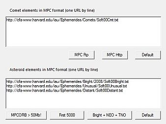
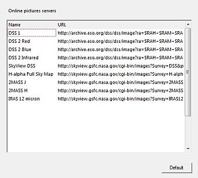

Si esteu connectat a Internet per mitjà d'un proxy, a Cartes del Cel li calen els seus paràmetres per funcionar.
Els paràmetres són:
* Usuari Nom usat per connectar al proxy
Per defecte no s'usa el proxy i llavors no calen paràmetres.
Podeu estalviar-vos de petjar cada vegada el botó de descàrrega quan vulgueu obtenir dades de recursos en línea. Perquè sigui així us cal desmarcar la casella “Demana confirmació abans de connectar a Internet” al peu d'aquesta pestanya.
 Aquí hi ha especificades URLs del MPC usades per baixar els elements orbitals dels cometes i els asteroides.
La zona d'entrada superior conté les URL per als cometes. Podeu escollir el protocol de descàrrega amb un dels quatre botons:
La zona d'entrada inferior mostra les URLs del MPC usades per als asteroides; hi podeu triar fitxers d'elements orbitals per mitjà de quatre botons:

Aquí hi ha especificades URLs DSS usades per a descarregar imatges formatejades FITS.
Cada fila en la llista té una etiqueta i una URL. El nom s'usa com identificador breu per a la URL llarga. Les URLs descriuen exactament des d'on i com s'han de descarregar les imatges. (Mireu al lloc DSS per a més detalls).
Les etiquetes es fan servir quan demaneu la descàrrega d'imatges per mitjà de la icona en la barra d'eines d'objectes, o fent clic a Carta → Obté imatge DSS.
Podeu afegir-hi files (només usuaris experimentats que sàpiguen com fer-ho!),
amb aquesta caixa de diàleg. No espatllareu res si la sintaxi és incorrecta, el pitjor que pot passar és que el programa no pugui obtenir una imatge per una URL defectuosa.
Primer us cal deduir la sintaxi i el tipus de paràmetres que el lloc web pot manejar. Quan sapigueu això, heu d'omplir les variables per als paràmetres amb els valors que automàticament seran lliurats per Cartes del Cel.
Ara cliqueu una línia en blanc, entreu un nom curt a l'esquerra. A la dreta, entreu la URL completa amb les dades de Cartes del Cel en els llocs correctes.
La llista següent us dóna una visió de les variables que Cartes del Cel usa per generar les URLs de petició.
| SkyChart variable | meaning |
|---|---|
| $RAH | Coordenades del centre, Ascensió recta hores |
| $RAM | Coordenades del centre, Ascensió recta minuts |
| $RAS | Coordenades del centre, Ascensió recta segons |
| $DED | Coordenades del centre, Declinació graus, nord de l'equador celest va prefixat amb +, sud prefixat amb - |
| $DEM | Coordenades del centre, Declinació minuts |
| $DES | Coordenades del centre, Declinació segons |
| $RAF | Coordenades del centre, Ascensió recta, en graus decimals d'arc |
| $DEF | Coordenades del centre, Declinació, graus decimals. Nord de l'equador celest es representa sense signe, el sud prefixat amb - |
| $XSZ | Camp de visió en la direcció X, minuts decimals d'arc, precisió 3 dígits |
| $YSZ | Camp de visió en la direcció Y, minuts decimals d'arc, precisió 3 dígits |
| $FOVX | Camp de visió en la direcció X, graus decimals d'arc, precisió 6 dígits |
| $FOVY | Camp de visió en la direcció Y, graus decimals d'arc, precisió 6 dígits |
| $PIXX | Pixels en la direcció X |
| $PIXY | Pixels en la direcció Y |
Per llegir sobre el format URL en peticions mireu el document ASU.
Per llegir més sobre com baixar una imatge del DSS, feu clic aquí.
Per llegir com mostrar aquestes imatges feu clic aquí.
I per aprendre com configurar l'ús del DSS feu clic aquí.
{kind=link}
{kind=link}
{kind=link}
{kind=link}